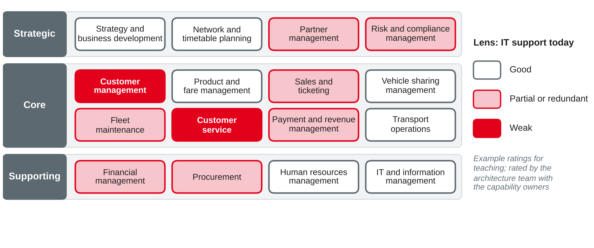

Today's Agenda
Recap: What Must Your Company Be Able to Do?
You were asked to list about ten things your training company must be able to do to earn its money — without naming departments or systems.
What Is a Business Model?
A business model describes how an enterprise creates value for customers, delivers it and captures a share of it as revenue and profit.
| Building blocks of the Business Model Canvas | Rhein-Neckar Mobil Group today (bus and rail) |
|---|---|
| Customer segments · value propositions | Commuters, pupils, occasional travellers · reliable regional transport |
| Channels · customer relationships | Ticket devices on board, transport association app · mostly anonymous |
| Revenue streams | Ticket sales, subscriptions, revenue share from the association, public contracts |
| Key resources · key activities · key partners | Buses, trains, drivers · operating the timetable · transport association, payment provider |
| Cost structure | Staff, energy, vehicles, maintenance |
Definition based on Teece (2010); building blocks from Osterwalder and Pigneur (2010); own example.
Digitisation, Digitalisation, Digital Transformation
| Term | What changes | Example at Rhein-Neckar Mobil Group |
|---|---|---|
| Digitisation | Information from analogue to digital | Paper timetables become PDF files |
| Digitalisation | Processes use digital technology | Ticket devices upload sales every 15 minutes instead of drivers handing in paper lists |
| Digital transformation | The value proposition and the business model change | One app and one account for bus, rail, car sharing and partner services |
Digital transformation is a process in which digital technologies trigger significant changes to an organisation — in strategy, structure, processes and culture.
Own wording and examples based on Vial (2019).
Four Digital Business Models
| Value chain (own products and processes) | Ecosystem (own and partners' offers) | |
|---|---|---|
| Deep knowledge of end customers | Omnichannel: one customer experience across all channels | Ecosystem driver: a platform that the customer starts from, with offers of many partners |
| Little knowledge of end customers | Supplier: sells through others, e.g. through an intermediary's app | Modular producer: a plug-and-play product or service used in many ecosystems |
Own wording based on Weill and Woerner (2018).
Digital Business Strategy and Alignment
Session 2: alignment
Digital business: fusion
EAM provides the shared picture that both sides need for this: what the enterprise can do today, and what it must be able to do tomorrow.
Own wording based on Henderson and Venkatraman (1993) and Bharadwaj et al. (2013).
Mini Exercise: How Far Does the Change Go?
Is each change at Rhein-Neckar Mobil Group digitisation, digitalisation or digital transformation? Which canvas building blocks change?
What Is a Business Capability?
A business capability is an ability of the enterprise to achieve a specific purpose — it describes what the enterprise does, not how, where or by whom.
Properties
Why it matters for EA
Own wording based on The Open Group (2022) and Hanschke (2023).
Capability, Process, Unit, Application
| Element | Answers | Example at Rhein-Neckar Mobil Group |
|---|---|---|
| Business capability | What must we be able to do? | Fare management |
| Business process | How, in which steps? | Introduce a new fare zone: decide, configure, test, roll out to devices |
| Organisation unit | Who is responsible? | Sales and fares department of the bus and rail unit |
| Application | With which software? | Fare back-end, ticket device software |
Own wording and examples based on The Open Group (2022) and Hanschke (2023).
The Capability Map
![Level-1 business capability map of Rhein-Neckar Mobil Group in three tiers: strategic capabilities strategy and business development, network and timetable planning, partner management, risk and compliance management; core capabilities customer management, product and fare management, sales and ticketing, vehicle sharing management, fleet maintenance, customer service, payment and revenue management, transport operations; supporting capabilities financial management, procurement, human resources management, IT and information management. Transport operations is broken down into four level-2 capabilities: duty and vehicle scheduling, dispatching and operations control, passenger information, incident handling in operations](img/eam-capability-map.png)
Own illustration based on Hanschke (2023) and The Open Group (2022); own example.
Building a Capability Map
A capability map is never finished — but it should be good enough after a few weeks, not a few years.
Own wording based on Hanschke (2023) and The Open Group (2022).
Mini Exercise: Capability or Not?
Is each item a business capability? If not, say what it is and suggest a capability name.
Heat Maps: One Map, Many Lenses

Own illustration based on Hanschke (2023) and The Open Group (2022); own example ratings.
Mapping Applications to Capabilities
| Capability | Applications today | Finding |
|---|---|---|
| Customer management | Car-sharing customer database, subscription module in the bus and rail ERP, transport association app | Fragmented: no group-wide customer |
| Financial management | Three ERP systems | Redundant: candidate for the one cloud ERP |
| Vehicle sharing management | Car-sharing app and back-end | Good, cloud-based, modern |
| Mobility account (new) | — | Gap: needed for the mobility app |
Own example based on Hanschke (2023).
Capability-Based Planning
Investments are discussed per capability, not per system: "we improve customer management" instead of "we buy a CRM".
Own illustration based on The Open Group (2022) and Hanschke (2023).
Value Streams
![Value stream subscribe to a monthly ticket with the stakeholder customer and the value of travelling all month with one ticket. Five stages: apply for a subscription, check and conclude contract, issue ticket, collect monthly payments, change or cancel. Enabling capabilities below each stage: customer management and sales and ticketing; customer management and product and fare management; sales and ticketing; payment and revenue management; customer service and customer management. Customer management enables three stages and is marked as critical](img/eam-value-stream.png)
Own illustration based on The Open Group (2022); own example.
Value Streams and Processes
| Value stream | Business process | |
|---|---|---|
| Perspective | The stakeholder's view of value received | The enterprise's view of work done |
| Granularity | A few stages, end to end | Detailed steps, roles, rules, systems |
| Stability | Stable, like capabilities | Changes with organisation and systems |
| Use | Strategy, capability prioritisation, customer journey | Process design, automation, controls |
Own comparison based on The Open Group (2022).
From Business Model to IT Landscape
Own illustration based on The Open Group (2022) and Ross et al. (2006).
What EAM Contributes to a Transformation
| Phase | EAM contribution | Session |
|---|---|---|
| Strategy development | Capability map, heat maps: where are we strong, where are gaps? | 12 |
| Target picture | Target capabilities, target landscape, architecture principles | 12, 13 |
| Planning | Roadmap, impact analysis, sourcing options, integration design | 13–15 |
| Implementation | Architecture reviews of projects; standards; governance | 16 |
| Monitoring | Progress per capability; update of the as-is | 11, 18 |
EAM turns a business model idea into a sequence of changes that the enterprise can actually carry out — and shows what it costs and what it touches.
Own summary based on Hanschke (2023) and Ahlemann et al. (2012).
Limits of Capability Maps
Own wording based on Hanschke (2023) and The Open Group (2022).
Case Exercise: A Capability Map for the Mobility App
Case: Rhein-Neckar Mobil Group (sessions 3–11): 3,200 employees, €410 million turnover; units bus and rail, car sharing (120,000 customers), vehicle maintenance. The architecture team now has a first application list of about 180 applications (session 11).
Case Exercise: Your Tasks
Key Takeaways
Next Session: Strategic Planning of the IT Landscape
Preparation: pick three applications of your training company and find out for each: how old is it, how satisfied are its users, and is a replacement planned?
References
TOGAF® is a registered trademark of The Open Group. Diagrams in this deck are own illustrations. Standards and frameworks are described in own words.